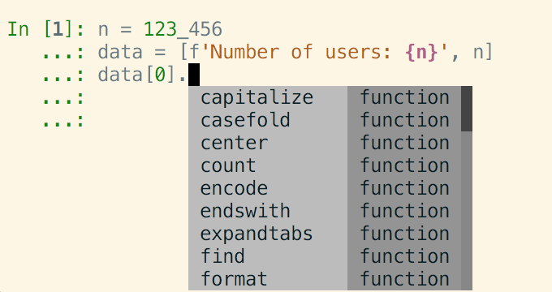

Warning
This documentation covers a development version of IPython. The development version may differ significantly from the latest stable release.
Important
This documentation covers IPython versions 6.0 and higher. Beginning with version 6.0, IPython stopped supporting compatibility with Python versions lower than 3.3 including all versions of Python 2.7.
If you are looking for an IPython version compatible with Python 2.7, please use the IPython 5.x LTS release and refer to its documentation (LTS is the long term support release).
6.x Series¶
IPython 6.5.0¶
Miscellaneous bug fixes and compatibility with Python 3.7.
IPython 6.4.0¶
Everything new in IPython 5.7
IPython 6.3.1¶
This is a bugfix release to switch the default completions back to IPython’s own completion machinery. We discovered some problems with the completions from Jedi, including completing column names on pandas data frames.
You can switch the completions source with the config option
Completer.use_jedi.
IPython 6.3¶
IPython 6.3 contains all the bug fixes and features in IPython 5.6. In addition:
A new display class
IPython.display.Codecan be used to display syntax highlighted code in a notebook (PR #10978).The
%%htmlmagic now takes a--isolatedoption to put the content in an iframe (PR #10962).The code to find completions using the Jedi library has had various adjustments. This is still a work in progress, but we hope this version has fewer annoyances (PR #10956, PR #10969, PR #10999, PR #11035, PR #11063, PR #11065).
The post event callbacks are now always called, even when the execution failed (for example because of a
SyntaxError).The execution info and result objects are now made available in the corresponding pre or post
*_run_cellevent callbacks in a backward compatible manner (#10774 and PR #10795).Performance with very long code cells (hundreds of lines) is greatly improved (PR #10898). Further improvements are planned for IPython 7.
You can see all pull requests for the 6.3 milestone.
IPython 6.2¶
IPython 6.2 contains all the bugs fixes and features available in IPython 5.5, like built in progress bar support, and system-wide configuration
The following features are specific to IPython 6.2:
Function signature in completions¶
Terminal IPython will now show the signature of the function while completing. Only the currently highlighted function will show its signature on the line below the completer by default. This functionality is recent, so it might be limited; we welcome bug reports and requests for enhancements. PR #10507
Assignments return values¶
IPython can now trigger the display hook on the last assignment of cells. Up until 6.2 the following code wouldn’t show the value of the assigned variable:
In[1]: xyz = "something"
# nothing shown
You would have to actually make it the last statement:
In [2]: xyz = "something else"
... : xyz
Out[2]: "something else"
With the option InteractiveShell.ast_node_interactivity='last_expr_or_assign'
you can now do:
In [2]: xyz = "something else"
Out[2]: "something else"
This option can be toggled at runtime with the %config magic, and will
trigger on assignment a = 1, augmented assignment +=, -=, |= …
as well as type annotated assignments: a:int = 2.
See PR #10598
IPython 6.1¶
Quotes in a filename are always escaped during tab-completion on non-Windows. PR #10069
Variables now shadow magics in autocompletion. See #4877 and PR #10542.
Added the ability to add parameters to alias_magic. For example:
In [2]: %alias_magic hist history --params "-l 2" --line Created `%hist` as an alias for `%history -l 2`. In [3]: hist %alias_magic hist history --params "-l 30" --line %alias_magic hist history --params "-l 2" --line
Previously it was only possible to have an alias attached to a single function, and you would have to pass in the given parameters every time:
In [4]: %alias_magic hist history --line Created `%hist` as an alias for `%history`. In [5]: hist -l 2 hist %alias_magic hist history --line
To suppress log state messages, you can now either use
%logstart -q, pass--LoggingMagics.quiet=Trueon the command line, or setc.LoggingMagics.quiet=Truein your configuration file.An additional flag
--TerminalInteractiveShell.term_title_formatis introduced to allow the user to control the format of the terminal title. It is specified as a python format string, and currently the only variable it will format is{cwd}.??/%pinfo2will now show object docstrings if the source can’t be retrieved. PR #10532IPython.displayhas gained a%markdowncell magic. PR #10563%configoptions can now be tab completed. PR #10555%configwith no arguments are now unique and sorted. PR #10548Completion on keyword arguments does not duplicate
=sign if already present. PR #10547%run -m <module>now<module>passes extra arguments to<module>. PR #10546completer now understand “snake case auto complete”: if
foo_bar_kittensis a valid completion, I can typef_b<tab>will complete to it. PR #10537tracebacks are better standardized and will compress
/path/to/hometo~. PR #10515
The following changes were also added to IPython 5.4, see what’s new in IPython 5.4 for more detail description:
TerminalInteractiveShellis configurable and can be configured to (re)-use the readline interface.objects can now define a
_repr_mimebundle_Execution heuristics improve for single line statements
display()can now return a display id to update display areas.
IPython 6.0¶
Released April 19th, 2017
IPython 6 features a major improvement in the completion machinery which is now capable of completing non-executed code. It is also the first version of IPython to stop compatibility with Python 2, which is still supported on the bugfix only 5.x branch. Read below for a non-exhaustive list of new features.
Make sure you have pip > 9.0 before upgrading. You should be able to update by using:
pip install ipython --upgrade
Note
If your pip version is greater than or equal to pip 9.0.1 you will automatically get the most recent version of IPython compatible with your system: on Python 2 you will get the latest IPython 5.x bugfix, while in Python 3 you will get the latest 6.x stable version.
New completion API and Interface¶
The completer Completion API has seen an overhaul, and the new completer has plenty of improvements both from the end users of terminal IPython and for consumers of the API.
This new API is capable of pulling completions from jedi, thus allowing
type inference on non-executed code. If jedi is installed, completions like
the following are now possible without code evaluation:
>>> data = ['Number of users', 123_456]
... data[0].<tab>
That is to say, IPython is now capable of inferring that data[0] is a string,
and will suggest completions like .capitalize. The completion power of IPython
will increase with new Jedi releases, and a number of bug-fixes and more completions
are already available on the development version of jedi if you are curious.
With the help of prompt toolkit, types of completions can be shown in the completer interface:
{kind=link}
The appearance of the completer is controlled by the
c.TerminalInteractiveShell.display_completions option that will show the
type differently depending on the value among 'column', 'multicolumn'
and 'readlinelike'
The use of Jedi also fulfills a number of requests and fixes a number of bugs like case-insensitive completion and completion after division operator: See PR #10182.
Extra patches and updates will be needed to the ipykernel package for
this feature to be available to other clients like Jupyter Notebook, Lab,
Nteract, Hydrogen…
The use of Jedi should be barely noticeable on recent machines, but
can be slower on older ones. To tweak the performance, the amount
of time given to Jedi to compute type inference can be adjusted with
c.IPCompleter.jedi_compute_type_timeout. The objects whose type were not
inferred will be shown as <unknown>. Jedi can also be completely deactivated
by using the c.Completer.use_jedi=False option.
The old Completer.complete() API is waiting deprecation and should be
replaced replaced by Completer.completions() in the near future. Feedback on
the current state of the API and suggestions are welcome.
Python 3 only codebase¶
One of the large challenges in IPython 6.0 has been the adoption of a pure Python 3 codebase, which has led to upstream patches in pip, pypi and warehouse to make sure Python 2 systems still upgrade to the latest compatible Python version.
We remind our Python 2 users that IPython 5 is still compatible with Python 2.7, still maintained and will get regular releases. Using pip 9+, upgrading IPython will automatically upgrade to the latest version compatible with your system.
Warning
If you are on a system using an older version of pip on Python 2, pip may
still install IPython 6.0 on your system, and IPython will refuse to start.
You can fix this by upgrading pip, and reinstalling ipython, or forcing pip to
install an earlier version: pip install 'ipython<6'
The ability to use only Python 3 on the code base of IPython brings a number of advantages. Most of the newly written code make use of optional function type annotation leading to clearer code and better documentation.
The total size of the repository has also decreased by about 1500 lines (for the first time excluding the big split for 4.0). The decrease is potentially a bit more for the sour as some documents like this one are append only and are about 300 lines long.
The removal of the Python2/Python3 shim layer has made the code quite a lot clearer and more idiomatic in a number of locations, and much friendlier to work with and understand. We hope to further embrace Python 3 capabilities in the next release cycle and introduce more of the Python 3 only idioms (yield from, kwarg only, general unpacking) in the IPython code base, and see if we can take advantage of these to improve user experience with better error messages and hints.
Configurable TerminalInteractiveShell, readline interface¶
IPython gained a new c.TerminalIPythonApp.interactive_shell_class option
that allows customizing the class used to start the terminal frontend. This
should allow a user to use custom interfaces, like reviving the former readline
interface which is now a separate package not actively maintained by the core
team. See the project to bring back the readline interface: rlipython.
This change will be backported to the IPython 5.x series.
Misc improvements¶
The
%%capturemagic can now capture the result of a cell (from an expression on the last line), as well as printed and displayed output. PR #9851.Pressing Ctrl-Z in the terminal debugger now suspends IPython, as it already does in the main terminal prompt.
IPython.display has gained a
GeoJSONobject. PR #10288 and PR #10253
Functions Deprecated in 6.x Development cycle¶
Loading extensions from
ipython_extension_dirprints a warning that this location is pending deprecation. This should only affect users still having extensions installed with%install_extwhich has been deprecated since IPython 4.0, and removed in 5.0. Extensions still present inipython_extension_dirmay shadow more recently installed versions using pip. It is thus recommended to cleanipython_extension_dirof any extension now available as a package.IPython.utils.warnwas deprecated in IPython 4.0, and has now been removed. instead ofIPython.utils.warninbuiltwarningsmodule is used.The function
IPython.core.oinspect.py:call_tipis unused, was marked as deprecated (raising aDeprecationWarning) and marked for later removal. PR #10104
Backward incompatible changes¶
Functions Removed in 6.x Development cycle¶
The following functions have been removed in the development cycle marked for Milestone 6.0.
IPython/utils/process.py-is_cmd_foundIPython/utils/process.py-pycmd2argvThe
--deep-reloadflag and the corresponding options to injectdreloadorreloadinto the interactive namespace have been removed. You have to explicitly importreloadfromIPython.lib.deepreloadto use it.The
%profileused to print the current IPython profile, and which was deprecated in IPython 2.0 does now raise aDeprecationWarningerror when used. It is often confused with the%prunand the deprecation removal should free up theprofilename in future versions.